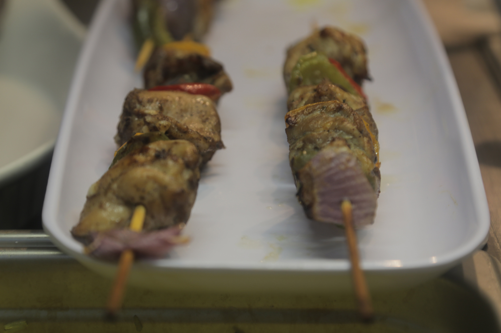
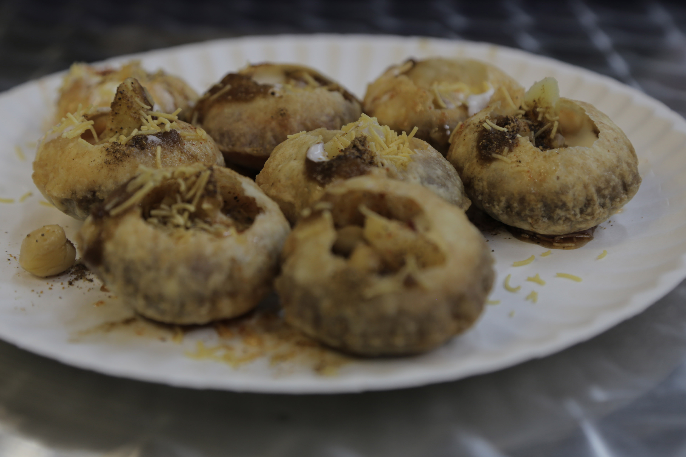
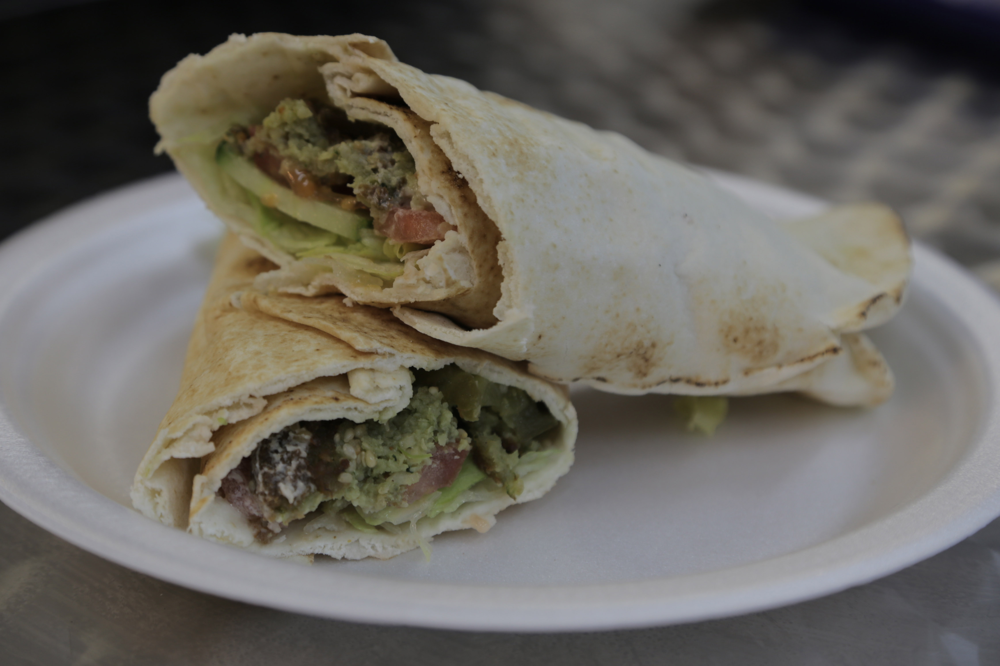

Tamba specializes in home-made authentic Egyptian food.



Menu
$$$$$
Basbousa - A sweet semolina cake which is soaked in a syrup that has a floral scent (made from rose water and sometimes lemon and honey).
Bram rice - Rice made with milk which is stuffed with chicken liver.
Falafel - (or ta'amiya) A well-known dish in the Middle East thought to have originated in Egypt. It consists of balls of fava beans (broad beans) or chickpeas that have been deep fried.
Fatta - A garlic and white vinegar flavored meat soup served with rice. Traditionally a Nubian dish, Fatta is usually prepared on special occasions such as weddings, a woman's first pregnancy (baby shower) and as the main meal during the Eid al-Adha religious festival.
Ful medames - Mashed Fava beans (broad beans) that are cooked with oil, chopped parsley, garlic, lemon juice and salt added to them.
Hamam Mahshi - (stuffed pigeon) This is similar to Mahshi (see below), though is made by stuffing rice, wheat or herbs into pigeon then grilled or roasted it.
Hummus bi Tahina - a dip made from chickpea and sesame. It is usually served with grilled or toasted bread. It can also be used as a spread or in a sandwich.
Kofta - Sometimes called Kefta, these are spiced meatballs (looking more like small sausages than balls) often served on a skewer.
Kibda - fried liver (beef) usually sold from a cart on the street.